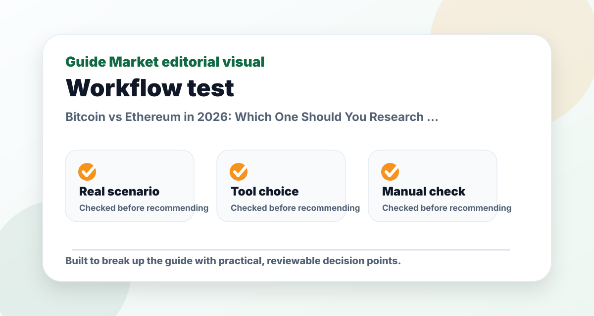
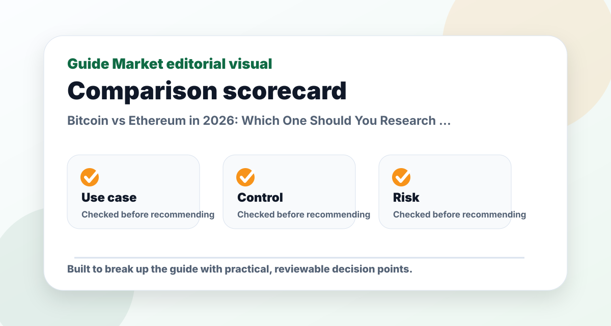

Bitcoin vs Ethereum in 2026: Which One Should You Research First?
Published May 12, 2026. Last updated May 24, 2026. Estimated reading time: 9 minutes.
Bitcoin and Ethereum are often grouped together as crypto, but they are not trying to do the same job. Bitcoin is mainly a digital scarcity and store-of-value thesis. Ethereum is a programmable blockchain and application platform thesis. Understanding that difference is the first step before comparing them.

The real problem this guide solves
The reason this topic matters is not that Bitcoin vs Ethereum 2026 are trendy. The real problem is understanding whether digital scarcity or programmable blockchain utility better fits a research thesis. A useful guide should help you make a decision faster while also showing what could go wrong.
My editorial approach is to treat Bitcoin, Ethereum as practical options, not magic answers. I look for workflow fit, learning curve, verification needs, pricing transparency, and the amount of work left after the first output. That is usually where the difference between a good-looking tool and a genuinely useful tool becomes obvious.
How to compare the options
| Criterion | Why it matters | What I would check |
|---|---|---|
| Best fit | A tool or asset should solve a specific problem, not simply look impressive. | Use it against one realistic scenario: a new crypto investor deciding which asset to study first before considering any smaller tokens. |
| Control | You need to edit, verify, export, or adapt the result. | Check whether the output can be changed without starting over. |
| Risk | Every option has a downside: cost, accuracy, privacy, volatility, complexity, or lock-in. | Write the failure case before you commit. |
| Long-term usefulness | The best choice should still be useful after the novelty fades. | Ask whether you would use it weekly, monthly, or only once. |
Pros and cons at a glance
| Approach | Pros | Cons |
|---|---|---|
| Broad diversified research | Reduces dependence on one idea and encourages patience. | Less exciting and may feel slow during market rallies. |
| Individual assets | Can match a specific thesis and offer higher upside if correct. | Requires more research and can create concentrated losses. |
| Waiting for clarity | Protects capital and reduces emotional decisions. | Can feel uncomfortable when prices are rising quickly. |
Practical example workflow
For a realistic test, I would start with this situation: a new crypto investor deciding which asset to study first before considering any smaller tokens. That is specific enough to reveal whether the recommendation actually helps. A vague test produces a vague conclusion.
Step one is to define the outcome. Step two is to compare two or three options using the same task. Step three is to check what must be verified manually. Step four is to save the winning workflow as a reusable checklist. This matters because a one-time good answer is less valuable than a process you can repeat.
My preferred setup here is Bitcoin first for simplicity, Ethereum next for blockchain utility and application research. I would not add more options until that workflow hits a clear limit. More tools can create more decisions, and more decisions often reduce consistency.

Common mistakes
- Choosing the most popular option without checking whether it fits the actual task.
- Accepting the first output or first recommendation without editing, testing, or verifying it.
- Paying for multiple subscriptions before proving that one workflow saves time or improves quality.
- Ignoring privacy, source quality, pricing changes, or hidden limitations.
- Using the same generic prompt, template, or decision rule for every situation.
Final recommendation
If I had to make a practical recommendation, I would start with Bitcoin first for simplicity, Ethereum next for blockchain utility and application research. That recommendation is not based on hype; it is based on which option gives a useful first result while still leaving the reader in control.
The best decision is the one you can explain clearly after the tab is closed. If you cannot explain why you chose an option, what its limitation is, and what you will verify next, keep researching before committing time or money.
FAQs
Is this article financial advice?
No. This guide is educational research content. It does not know your personal financial situation, taxes, debt, income, time horizon, or risk tolerance.
Should beginners buy the assets mentioned here?
Not automatically. Beginners should usually start with a written plan, an emergency fund, and diversified research before considering individual stocks, ETFs, or crypto assets.
How often should I update my research?
Quarterly is enough for many long-term investors. Update sooner if the original thesis changes, fees change, regulation changes, or a major company-specific event occurs.
What is the biggest mistake to avoid?
The biggest mistake is confusing a watchlist with a recommendation. A watchlist is a starting point for research, not a promise that an investment will perform well.
Quick answer
If you are completely new, research Bitcoin first because the thesis is simpler: fixed supply, decentralization, and monetary scarcity. If you already understand crypto basics and want to study applications, research Ethereum next because it introduces smart contracts, decentralized finance, tokenized assets, and developer ecosystems. My view is that Bitcoin is easier to explain, while Ethereum is broader but more complex.
Side-by-side comparison
| Question | Bitcoin | Ethereum |
|---|---|---|
| Main idea | Scarce digital asset | Programmable blockchain network |
| Typical investor thesis | Store of value, macro hedge, digital gold | Application platform, settlement layer, DeFi and tokenization |
| Complexity | Lower | Higher |
| Cash flow | No traditional cash flow | No traditional equity cash flow; network fees and staking dynamics matter |
| Biggest risk | Sentiment cycles and no intrinsic cash flow model | Competition, scaling, regulation, and value capture |
| Who should research first? | Beginners in crypto | Investors who want to understand blockchain utility |
Why Bitcoin is easier to understand
Bitcoin has a narrow story. It is designed to be scarce, decentralized, and resistant to arbitrary monetary changes. Supporters compare it to digital gold because the supply schedule is transparent and not controlled by a central bank. Critics argue that it has no cash flow, consumes resources, and depends heavily on belief. Both sides are discussing the same core question: can digital scarcity become a durable store of value?
That clarity is useful. When researching Bitcoin, you do not need to study hundreds of applications or developer ecosystems. You need to understand custody, wallets, mining, halvings, ETF access, liquidity, volatility, regulation, and portfolio sizing. That is still a lot, but it is a cleaner research path than most crypto assets.
Why Ethereum is more flexible but harder
Ethereum is not simply “another Bitcoin.” It is a network for programmable applications. Developers use it and related scaling networks to build financial protocols, token systems, NFT marketplaces, identity experiments, games, and infrastructure. This makes Ethereum more like a technology platform than a pure monetary asset.
The challenge is that platform value is messy. More usage can mean more fees and more ecosystem relevance, but scaling networks can change where value accrues. Competitors can attract developers. Regulation can affect DeFi. Users can decide that centralized apps are simpler. To evaluate Ethereum, you need to understand not just ETH as an asset, but Ethereum as a technology stack.
ETF access changed the research conversation
One reason 2026 crypto research feels different from earlier cycles is that many investors can now study exposure through regulated brokerage products rather than only crypto exchanges. Spot Bitcoin ETFs created a more familiar wrapper for Bitcoin exposure, and Ethereum-related products have also increased mainstream attention. That does not remove volatility. It changes access and custody.
For a beginner, ETF access may reduce operational mistakes such as losing keys or using unreliable exchanges. But ETF fees, tracking, tax treatment, and product structure still matter. A fund wrapper does not turn crypto into a low-risk asset. It simply changes how you hold exposure.
Which one would I research first?
My editorial answer: start with Bitcoin if you want the simplest crypto investment thesis, then study Ethereum if you want to understand why blockchains might matter beyond scarcity. I would not jump into smaller tokens before understanding these two because most crypto narratives borrow from them. Bitcoin explains scarcity. Ethereum explains programmability. Together, they form the foundation of most crypto discussions.
For a cautious investor, Bitcoin may be the only crypto asset worth researching at first. For a technology-focused investor, Ethereum may be more interesting because it touches software, finance, identity, and infrastructure. But interesting does not automatically mean safer. Sometimes the simpler asset is easier to size responsibly.
Portfolio role: core, satellite, or avoid?
I would think in roles. Bitcoin can be researched as a possible speculative diversifier or digital store-of-value allocation. Ethereum can be researched as a higher-complexity technology-network allocation. Neither should replace an emergency fund, a diversified stock portfolio, or a thoughtful financial plan.
A common mistake is investing in crypto with money that has a short-term job, such as rent, tuition, taxes, or a house deposit. Crypto is too volatile for that. Another mistake is assuming that because Bitcoin and Ethereum are the largest assets, they cannot fall sharply. They can, and historically they have.
Questions to answer before buying either
- Can I explain the investment thesis without using hype words?
- What percentage loss would make me panic sell?
- Am I buying because of research or because of recent price movement?
- Do I understand custody, fees, taxes, and security?
- Would I still want this asset if it fell 50 percent after I bought it?
If those questions make you uncomfortable, that is useful information. It may mean you need more research, a smaller position, or no position at all. Good investing is not about proving you are brave. It is about making decisions you can live with when markets stop being friendly.
My practical test for Bitcoin
For Bitcoin, I use a simple test: can the asset keep attracting long-term holders even when the price is boring? If the answer is yes, the store-of-value thesis becomes more credible. If interest disappears whenever price momentum fades, the asset is more dependent on speculation than supporters may admit.
I would watch ETF flows, long-term holder behavior, regulatory treatment, exchange liquidity, custody standards, and whether institutions continue to describe Bitcoin as a portfolio asset rather than a short-term trade. None of these indicators are perfect, but together they show whether the market is maturing or simply repeating another hype cycle.
My practical test for Ethereum
For Ethereum, I would ask a different question: are people using the network because it solves real problems, or because speculation is temporarily profitable? Durable usage matters more than headline activity. Stablecoin settlement, tokenized assets, developer tooling, layer-two adoption, and enterprise experimentation are more important to me than a single viral NFT or meme cycle.
I would also study how value moves between Ethereum mainnet, layer-two networks, applications, and ETH itself. This is one of the hardest parts of the Ethereum thesis. A network can be important while value capture remains complicated. That does not ruin the thesis, but it means investors need to be more precise.
Which is better for beginners?
Bitcoin is usually better for a first research project because it has fewer moving parts. Ethereum is better for understanding what crypto could become if blockchains move beyond a store-of-value narrative. If someone only has time to study one, I would choose Bitcoin first. If someone wants to understand the whole crypto ecosystem, I would study both and write separate theses.
The mistake is treating them as the same bet. Bitcoin asks whether digital scarcity matters. Ethereum asks whether programmable settlement and decentralized applications matter. Those are different questions, and a thoughtful portfolio should not blur them together.
Custody, security, and product access
Another difference between Bitcoin and Ethereum is how people access them. Direct ownership requires wallets, seed phrases, exchange accounts, and security habits. Fund products can simplify access, but they introduce fees, tracking differences, issuer risk, and less direct control. A beginner should compare direct ownership with brokerage products before deciding that one route is automatically better.
Bitcoin custody is conceptually simpler because you are holding one asset. Ethereum custody can become more complicated if you interact with staking, decentralized applications, layer-two networks, bridges, or smart contracts. Every extra feature adds a possible failure point. That does not mean Ethereum is bad; it means the operational learning curve is higher.
For most casual investors, the safest research path is to understand the asset first, then the access method. Do not open accounts, move money, or connect wallets before you know what you are trying to own and why. Crypto mistakes can be expensive and sometimes irreversible.
Tax and regulation considerations
Tax treatment can materially change investment results. Selling crypto, swapping one token for another, receiving staking rewards, and using certain products may create taxable events depending on your jurisdiction. Regulations also continue to evolve. A strategy that looks simple in a YouTube video can become messy once reporting and taxes are included.
I would keep a clean record of transactions, fees, dates, and cost basis. If the position is meaningful, professional tax advice can be worth more than another market prediction. This is especially true for Ethereum users who interact with multiple apps, because transaction histories can become complicated quickly.
What a balanced conclusion looks like
If I had to summarize the comparison in one sentence, I would say this: Bitcoin is the cleaner monetary bet, Ethereum is the richer technology bet. Bitcoin asks investors to believe in digital scarcity. Ethereum asks investors to believe in programmable settlement, developer ecosystems, and application demand. Both can be volatile. Both can disappoint. Both require independent research.
I would not frame the decision as a sports rivalry. The better question is what role, if any, either asset has in your portfolio. Some investors may prefer Bitcoin only. Others may hold both. Many should avoid direct crypto entirely and use diversified funds instead. The mature answer depends on risk tolerance, not online arguments.
Common beginner mistakes in the comparison
The first mistake is choosing only by recent performance. If Ethereum outperformed Bitcoin last month, that does not prove Ethereum is better for your portfolio. If Bitcoin held up better during a drawdown, that does not prove Ethereum has no future. Short-term price movement can reflect liquidity, narratives, leverage, macro conditions, and positioning rather than long-term value.
The second mistake is ignoring personal behavior. Bitcoin may be simpler, but if a 40 percent drawdown would make you sell, it is still too volatile for you. Ethereum may have more use cases, but if you do not understand smart contracts, staking, or scaling, the extra complexity may work against you. The “better” asset is not only about technology. It is also about what you can hold responsibly.
The third mistake is using social media as a research substitute. Crypto communities are useful for learning language and sentiment, but they are also tribal. Bitcoin supporters often dismiss everything else. Ethereum supporters often underestimate execution risk. A serious investor should listen to both sides, then write a thesis that does not depend on belonging to either group.
A conservative way to study both
If someone wants exposure but is still learning, I would research paper portfolios first. Track a hypothetical Bitcoin position and a hypothetical Ethereum position for 90 days. Write down why each moved, what news mattered, and how the volatility felt. This costs nothing and teaches more than reading price targets.
After that, compare the paper portfolio with a broad stock ETF and cash. If the crypto swings dominate your attention, that is a warning. If you can observe calmly and keep learning, you may be ready to decide whether a small real allocation makes sense. The slower path is often the smarter path.
Important risk note
Nothing on this page is a personal recommendation to buy or sell any investment. Crypto assets can be extremely volatile, individual stocks can lose value quickly, and even diversified funds can decline for long periods. If you invest, consider your emergency fund, time horizon, debt, taxes, concentration risk, and ability to tolerate losses before taking action.